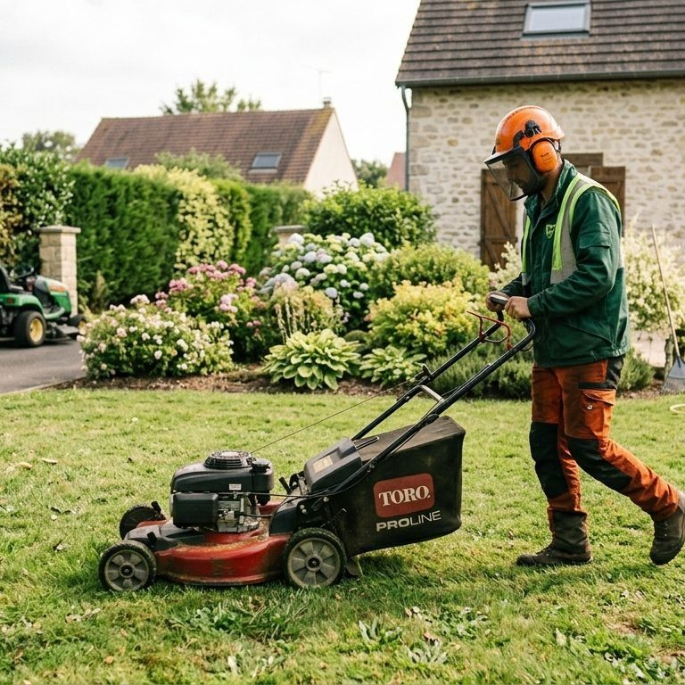
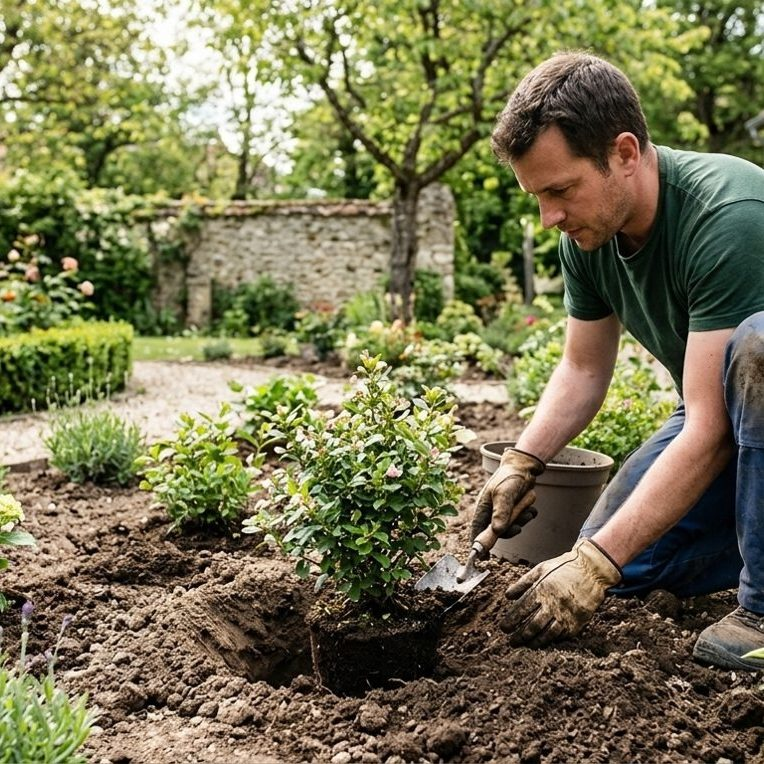

Entretien de jardin
Un suivi régulier pour garder pelouse, massifs et allées en bon état.
Paysagiste à Mareil-le-Guyon (78)
Chaumont Espaces Verts intervient à Mareil-le-Guyon pour l’entretien et l’aménagement de vos espaces verts.

Nos prestations
Du suivi régulier à la création d’un espace vert.
Un suivi régulier pour garder pelouse, massifs et allées en bon état.

Une taille soignée pour des haies nettes et bien dessinées.

Plantations, massifs et pelouse : un extérieur pensé avec vous.
À propos
Chaumont Espaces Verts est une EURL d’aménagement paysager basée à Mareil-le-Guyon, dans les Yvelines.
L’entreprise est dirigée par David Chaumont. Un appel suffit pour décrire votre jardin et votre besoin.
David Chaumont, dirigeant

Contact
Appelez pour décrire votre projet et demander un devis.
© Chaumont Espaces Verts · Maquette de démonstration